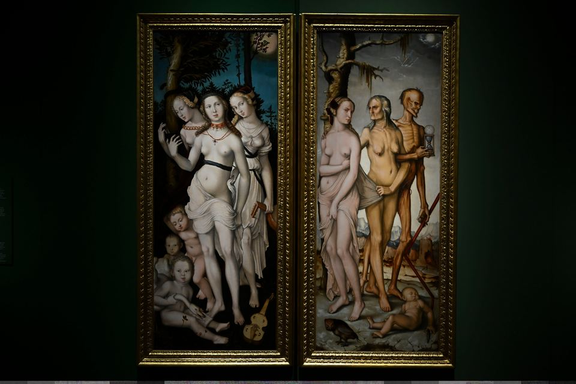

Hans Baldung Grien, un maestro de la mirada, el cuerpo y la muerte a la sombra de Durero

El Museo del Prado inaugura una exposición monográfica dedicada a uno de los grandes desconocidos del Renacimiento alemán
El Renacimiento, cuyo despunte se fecha a partir de finales del siglo XV, tuvo como su mayor estandarte la definición del humanismo, pero floreció de formas distintas según el contexto. En Alemania, Alberto Durero fue uno de los pilares de la evolución de la pintura en las llamadas “escuelas del norte”, donde los motivos grecolatinos convivieron con la sensibilidad medieval sobre el erotismo y la muerte. La sombra de Durero fue tan larga que ocultó a artistas de gran talento como su colaborador Hans Baldung Grien (1484/85 - 1545), a quien el madrileño Museo del Prado dedica una muestra monográfica que se ha inaugurado este viernes y podrá verse hasta el 7 de marzo de 2027 en la sala D del…